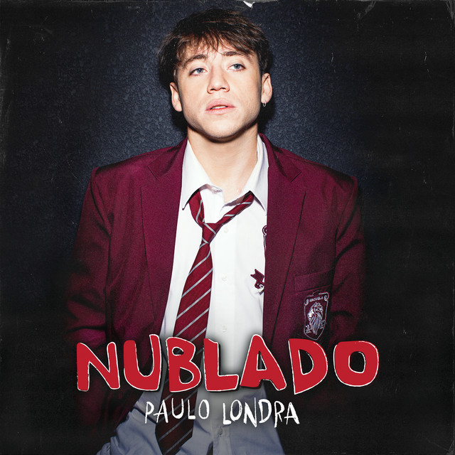

Su mayor hit global. Llegó al #1 del Billboard Argentina y lo catapultó a la fama internacional.

Del álbum Back to the Game. Paulo muestra una faceta más madura y emocional con producción envolvente.
Trap puro con letras de soledad y desamor. Un himno para los fans más fieles de Paulo.
Una joya del álbum debut que combina reggaetón con trap. Favorita de los fans desde el primer día.
Sencillo previo a Homerun. Pop latino muy cuidado sobre el amor y la incertidumbre.
Top 5 en Argentina. Paulo narra relaciones con humor y un flow único que lo hizo viral.